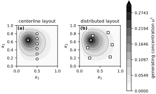
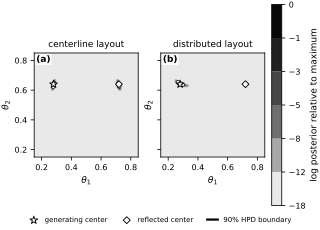
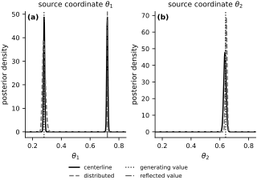

Inferring the location of a contaminant#
The thermal example inferred a coefficient that changed the differential operator. The present example keeps the operator fixed and infers the center of a localized source. It also shows how a symmetry in the complete parameter-to-data map can create an exactly multimodal posterior.
Steady source-localization model#
Let \(D=(0,1)^2\) be a nondimensional square. A continuously maintained source has reached a steady diffusive state \(u_{\boldsymbol{\theta}}:D\to\mathbb{R}\) satisfying
The zero boundary value represents an idealized absorbing boundary. The unknown parameter
is the source center. The source has known total strength \(Q=1\) and known width \(\ell=0.06\). Let \(\Phi\) denote the standard normal cumulative distribution function and define
The normalized Gaussian source is
Consequently, \(\int_D s_{\boldsymbol{\theta}}(\mathbf{x})\,d\mathbf{x}=Q\) for every admissible center. Only \(\boldsymbol{\theta}\) is inferred; the PDE, boundary condition, \(Q\), and \(\ell\) are treated as known. This deliberately simple model isolates source localization and sensor geometry from the transient advection, uncertain media, and distributed sources that arise in field-scale contaminant inversion (Alexanderian, 2021; Michalak and Kitanidis, 2003).
Finite-difference observation map#
Let \(N\) be the number of equal segments along each coordinate, let \(h=1/N\), and let \(u_{ij}\) approximate the state at the interior node \((ih,jh)\) for \(i,j=1,\ldots,N-1\). The five-point discretization is
with zero values at boundary nodes. In matrix form,
For a sensor layout \(d\), let \(\mathbf{E}_d\) select the state values at its \(m\) sensor locations. Its parameter-to-data map is
The matrix \(\mathbf{A}_h\) is fixed while the source changes. Let \(\mathbf{e}_j\) be the coordinate vector that selects the \(j\)th sensor degree of freedom, and solve the adjoint system \(\mathbf{A}_h^{\mathsf{T}}\mathbf{z}_j=\mathbf{e}_j\) once. Every later prediction is the inner product \(G_{h,d,j}(\boldsymbol{\theta})=\mathbf{z}_j^{\mathsf{T}}\mathbf{s}_h(\boldsymbol{\theta})\). The implementation therefore uses one sparse factorization and one adjoint right-hand side per sensor instead of a PDE solve at every candidate location. Sparse construction and factorization use SciPy (Virtanen and others, 2020).
def build_poisson_solver(num_segments):
"""Return the interior grid, five-point matrix factorization, and spacing."""
h = 1.0 / num_segments
axis = np.arange(1, num_segments) * h
num_interior = axis.size
one_dimensional = diags(
(
-np.ones(num_interior - 1),
2.0 * np.ones(num_interior),
-np.ones(num_interior - 1),
),
(-1, 0, 1),
format="csc",
) / h**2
identity = eye(num_interior, format="csc")
matrix = (
kron(identity, one_dimensional, format="csc")
+ kron(one_dimensional, identity, format="csc")
)
xx, yy = np.meshgrid(axis, axis, indexing="ij")
points = np.column_stack((xx.ravel(), yy.ravel()))
return axis, points, splu(matrix), h
def source_density(points, locations, width=0.06, strength=1.0):
"""Evaluate domain-normalized Gaussian sources at one or more centers."""
locations = np.atleast_2d(locations)
displacement = points[:, None, :] - locations[None, :, :]
squared_distance = np.sum(displacement**2, axis=2)
coordinate_mass = (
ndtr((1.0 - locations) / width) - ndtr(-locations / width)
)
domain_mass = np.prod(coordinate_mass, axis=1)
scale = strength / (2.0 * np.pi * width**2 * domain_mass)
return scale[None, :] * np.exp(-0.5 * squared_distance / width**2)
def sensor_dofs(sensor_locations, num_segments):
"""Map grid-aligned physical sensor locations to interior degrees of freedom."""
scaled = np.asarray(sensor_locations) * num_segments
if not np.allclose(scaled, np.rint(scaled)):
raise ValueError("Every sensor must coincide with a grid node.")
indices = np.rint(scaled).astype(int) - 1
num_interior = num_segments - 1
if np.any(indices < 0) or np.any(indices >= num_interior):
raise ValueError("Sensors must lie at interior nodes.")
return indices[:, 0] * num_interior + indices[:, 1]
def build_sensor_responses(factorization, sensor_indices, num_unknowns):
"""Solve all adjoint systems as one block."""
right_hand_sides = np.zeros((num_unknowns, sensor_indices.size))
right_hand_sides[sensor_indices, np.arange(sensor_indices.size)] = 1.0
return factorization.solve(right_hand_sides, trans="T").T
def predict_candidates(points, sensor_responses, locations, chunk_size=512):
"""Evaluate every sensor response without repeated PDE solves."""
predictions = np.empty((locations.shape[0], sensor_responses.shape[0]))
for start in range(0, locations.shape[0], chunk_size):
stop = min(start + chunk_size, locations.shape[0])
source_values = source_density(points, locations[start:stop])
predictions[start:stop] = (sensor_responses @ source_values).T
return predictions
Synthetic observations#
All data below are synthetic and generated inside this notebook. The generating center is
Six centerline sensors and six distributed sensors define two hypothetical experiments. The layouts have equal size, and the same six standard-normal draws are reused across them to isolate the effect of placement in this controlled comparison. Within either experiment, the observation model remains independent Gaussian noise. Four additional locations are held out from both calibrations.
The generating field uses \(N_{\mathrm{truth}}=160\) segments per coordinate, while inference uses \(N=40\). The independent noise standard deviation is \(\sigma_{\mathrm{obs}}=0.004\), and the random seed is 20260918. The fine-grid generator avoids fitting the observations with the identical discretization used to create them. The sensor-space discrepancy between the fine and coarse models is checked relative to \(\sigma_{\mathrm{obs}}\) (Cotter et al., 2010; Kaipio and Somersalo, 2007).
true_location = np.array([0.28, 0.64])
reflected_location = np.array([1.0 - true_location[0], true_location[1]])
noise_scale = 0.004
random_seed = 20260918
centerline_sensors = np.array(
[
[0.500, 0.175],
[0.500, 0.300],
[0.500, 0.425],
[0.500, 0.550],
[0.500, 0.675],
[0.500, 0.800],
]
)
distributed_sensors = np.array(
[
[0.250, 0.200],
[0.750, 0.225],
[0.200, 0.450],
[0.800, 0.525],
[0.325, 0.750],
[0.700, 0.825],
]
)
heldout_sensors = np.array(
[
[0.250, 0.325],
[0.750, 0.400],
[0.375, 0.825],
[0.825, 0.700],
]
)
all_sensors = np.vstack(
(centerline_sensors, distributed_sensors, heldout_sensors)
)
truth_segments = 160
truth_start = time.perf_counter()
truth_axis, truth_points, truth_factorization, truth_h = build_poisson_solver(
truth_segments
)
truth_source = source_density(truth_points, true_location)[:, 0]
truth_interior = truth_factorization.solve(truth_source)
truth_sensor_values = truth_interior[
sensor_dofs(all_sensors, truth_segments)
]
truth_seconds = time.perf_counter() - truth_start
rng = np.random.default_rng(random_seed)
shared_noise = noise_scale * rng.standard_normal(centerline_sensors.shape[0])
centerline_observations = truth_sensor_values[:6] + shared_noise
distributed_observations = truth_sensor_values[6:12] + shared_noise
heldout_observations = (
truth_sensor_values[12:] + noise_scale * rng.standard_normal(heldout_sensors.shape[0])
)
full_axis = np.linspace(0.0, 1.0, truth_segments + 1)
truth_field = np.zeros((truth_segments + 1, truth_segments + 1))
truth_field[1:-1, 1:-1] = truth_interior.reshape(
truth_segments - 1, truth_segments - 1
)
fig, axes = new_figure("full_landscape", ncols=2)
levels = np.linspace(0.0, truth_field.max(), 12)
for axis, sensors, title, marker in zip(
axes,
(centerline_sensors, distributed_sensors),
("centerline layout", "distributed layout"),
("o", "s"),
):
filled = axis.contourf(
full_axis,
full_axis,
truth_field.T,
levels=levels,
cmap="Greys",
extend="max",
)
axis.contour(
full_axis,
full_axis,
truth_field.T,
levels=levels[2::2],
colors="0.45",
linewidths=0.45,
)
axis.scatter(
sensors[:, 0],
sensors[:, 1],
marker=marker,
s=24,
facecolors="white",
edgecolors="black",
linewidths=0.9,
zorder=3,
)
axis.scatter(
*true_location,
marker="*",
s=70,
facecolors="white",
edgecolors="black",
linewidths=0.9,
zorder=4,
)
axis.set(
xlabel="$x_1$",
ylabel="$x_2$",
title=title,
xlim=(0.0, 1.0),
ylim=(0.0, 1.0),
aspect="equal",
)
colorbar = fig.colorbar(filled, ax=axes, fraction=0.045, pad=0.03)
colorbar.set_label("generating concentration $u^{\\dagger}$")
label_panels(axes, boxed=True)
finalize_axes(axes, keep_box=True)
plt.show()
{kind=link}

Fig. 29 Fine-grid generating concentration and the two six-sensor calibration layouts. Open circles mark centerline sensors, open squares mark distributed sensors, and the star marks the generating source center.#
inference_segments = 40
setup_start = time.perf_counter()
inference_axis, inference_points, inference_factorization, inference_h = (
build_poisson_solver(inference_segments)
)
inference_sensor_indices = sensor_dofs(all_sensors, inference_segments)
sensor_responses = build_sensor_responses(
inference_factorization,
inference_sensor_indices,
inference_points.shape[0],
)
setup_seconds = time.perf_counter() - setup_start
coarse_truth_predictions = (
sensor_responses @ source_density(inference_points, true_location)[:, 0]
)
maximum_discrepancy = np.max(
np.abs(coarse_truth_predictions - truth_sensor_values)
)
display_book_table(
["quantity", "value"],
[
("fine-grid unknowns", f"{truth_points.shape[0]:,}"),
("coarse-grid unknowns", f"{inference_points.shape[0]:,}"),
("calibration sensors per layout", "6"),
("held-out sensors", "4"),
("maximum sensor-space discrepancy", f"{maximum_discrepancy:.3e}"),
("discrepancy / noise standard deviation", f"{maximum_discrepancy / noise_scale:.3f}"),
],
column_spec="lr",
)
| quantity | value |
|---|---|
| fine-grid unknowns | 25,281 |
| coarse-grid unknowns | 1,521 |
| calibration sensors per layout | 6 |
| held-out sensors | 4 |
| maximum sensor-space discrepancy | 1.771e-04 |
| discrepancy / noise standard deviation | 0.044 |
Bayesian formulation#
For layout \(d\) and sensor \(j\), the observation is
where \(\sigma_{\mathrm{obs}}=0.004\) is treated as known. The prior is continuous and uniform on \(\Theta\):
For the observed vector \(\mathbf{y}_d\in\mathbb{R}^6\), the posterior density is
Here \(\mathbf{1}_{\Theta}\) is the indicator of the prior box. The parameter is two-dimensional, so deterministic tensor-product quadrature is practical. A \(281\times281\) trapezoidal grid approximates posterior integrals; a nested \(141\times141\) grid checks numerical stability. We also form a 90% highest-posterior-density (HPD) region from the normalized density. These are quadrature grids for a continuous posterior, not discrete parameter priors. MCMC diagnostics do not apply; the relevant checks are quadrature refinement, discretization error, posterior boundary mass, and the reflection identity developed below (Stuart, 2010).
def trapezoidal_weights(values):
spacing = values[1] - values[0]
weights = np.full(values.size, spacing)
weights[[0, -1]] *= 0.5
return weights
def normalize_posterior(log_density, values):
one_dimensional_weights = trapezoidal_weights(values)
quadrature_weights = (
one_dimensional_weights[:, None] * one_dimensional_weights[None, :]
)
log_normalizer = logsumexp(log_density + np.log(quadrature_weights))
density = np.exp(log_density - log_normalizer)
mass = density * quadrature_weights
return density, mass
def weighted_quantile(values, masses, probability):
return np.interp(probability, np.cumsum(masses), values)
def summarize_posterior(log_density, values):
density, mass = normalize_posterior(log_density, values)
marginal_x = mass.sum(axis=1)
marginal_y = mass.sum(axis=0)
mean = np.array((marginal_x @ values, marginal_y @ values))
intervals = np.array(
[
[
weighted_quantile(values, marginal_x, 0.05),
weighted_quantile(values, marginal_x, 0.95),
],
[
weighted_quantile(values, marginal_y, 0.05),
weighted_quantile(values, marginal_y, 0.95),
],
]
)
ordered = np.argsort(density.ravel())[::-1]
ordered_mass = mass.ravel()[ordered]
cutoff_index = np.searchsorted(np.cumsum(ordered_mass), 0.90)
hpd_cutoff = density.ravel()[ordered[cutoff_index]]
hpd_components = label(density >= hpd_cutoff)[1]
xx, yy = np.meshgrid(values, values, indexing="ij")
edge = (
(xx <= values[0] + 0.02)
| (xx >= values[-1] - 0.02)
| (yy <= values[0] + 0.02)
| (yy >= values[-1] - 0.02)
)
maximum_index = np.unravel_index(np.argmax(log_density), log_density.shape)
mode = np.array((values[maximum_index[0]], values[maximum_index[1]]))
return {
"density": density,
"mass": mass,
"mean": mean,
"intervals": intervals,
"hpd_cutoff": hpd_cutoff,
"hpd_components": hpd_components,
"edge_mass": mass[edge].sum(),
"left_mass": mass[values < 0.5, :].sum(),
"mode": mode,
}
candidate_values = np.linspace(0.15, 0.85, 281)
candidate_x, candidate_y = np.meshgrid(
candidate_values, candidate_values, indexing="ij"
)
candidate_locations = np.column_stack(
(candidate_x.ravel(), candidate_y.ravel())
)
posterior_start = time.perf_counter()
candidate_predictions = predict_candidates(
inference_points, sensor_responses, candidate_locations
)
centerline_log_density = -0.5 * np.sum(
(
(candidate_predictions[:, :6] - centerline_observations)
/ noise_scale
)
** 2,
axis=1,
).reshape(candidate_values.size, candidate_values.size)
distributed_log_density = -0.5 * np.sum(
(
(candidate_predictions[:, 6:12] - distributed_observations)
/ noise_scale
)
** 2,
axis=1,
).reshape(candidate_values.size, candidate_values.size)
centerline_posterior = summarize_posterior(
centerline_log_density, candidate_values
)
distributed_posterior = summarize_posterior(
distributed_log_density, candidate_values
)
coarse_values = candidate_values[::2]
centerline_coarse = summarize_posterior(
centerline_log_density[::2, ::2], coarse_values
)
distributed_coarse = summarize_posterior(
distributed_log_density[::2, ::2], coarse_values
)
posterior_seconds = time.perf_counter() - posterior_start
centerline_prediction_grid = candidate_predictions[:, :6].reshape(
candidate_values.size, candidate_values.size, 6
)
reflection_residual = np.max(
np.abs(centerline_prediction_grid - centerline_prediction_grid[::-1, :, :])
)
left_index = np.unravel_index(
np.argmax(
np.where(
candidate_x < 0.5,
centerline_log_density,
-np.inf,
)
),
centerline_log_density.shape,
)
right_index = np.unravel_index(
np.argmax(
np.where(
candidate_x > 0.5,
centerline_log_density,
-np.inf,
)
),
centerline_log_density.shape,
)
centerline_modes = np.array(
[
[candidate_values[left_index[0]], candidate_values[left_index[1]]],
[candidate_values[right_index[0]], candidate_values[right_index[1]]],
]
)
def interval_text(interval):
return f"[{interval[0]:.3f}, {interval[1]:.3f}]"
display_book_table(
["layout", "quadrature-grid mode(s)", "left mass", "90% HPD pieces"],
[
(
"centerline",
"; ".join(
f"({mode[0]:.3f}, {mode[1]:.3f})"
for mode in centerline_modes
),
f"{centerline_posterior['left_mass']:.3f}",
str(centerline_posterior["hpd_components"]),
),
(
"distributed",
f"({distributed_posterior['mode'][0]:.3f}, {distributed_posterior['mode'][1]:.3f})",
f"{distributed_posterior['left_mass']:.3f}",
str(distributed_posterior["hpd_components"]),
),
],
column_spec="llrr",
)
display_book_table(
["layout", "mean theta_1 (90% interval)", "mean theta_2 (90% interval)"],
[
(
"centerline",
f"{centerline_posterior['mean'][0]:.3f} "
+ interval_text(centerline_posterior["intervals"][0]),
f"{centerline_posterior['mean'][1]:.3f} "
+ interval_text(centerline_posterior["intervals"][1]),
),
(
"distributed",
f"{distributed_posterior['mean'][0]:.3f} "
+ interval_text(distributed_posterior["intervals"][0]),
f"{distributed_posterior['mean'][1]:.3f} "
+ interval_text(distributed_posterior["intervals"][1]),
),
],
column_spec="lrr",
)
diagnostic_rows = []
for name, fine, coarse in (
("centerline", centerline_posterior, centerline_coarse),
("distributed", distributed_posterior, distributed_coarse),
):
diagnostic_rows.append(
(
name,
f"{np.max(np.abs(fine['mean'] - coarse['mean'])):.2e}",
f"{np.max(np.abs(fine['intervals'] - coarse['intervals'])):.2e}",
f"{fine['edge_mass']:.2e}",
)
)
display_book_table(
["layout", "max mean change", "max interval change", "edge mass"],
diagnostic_rows,
column_spec="lrrr",
)
display_book_table(
["calculation", "algorithmic work", "wall time"],
[
(
"fine-grid data",
f"1 factorization + 1 solve ({truth_points.shape[0]:,} unknowns)",
f"{truth_seconds:.3f} s",
),
(
"coarse responses",
f"1 factorization + {all_sensors.shape[0]} adjoint RHS "
f"({inference_points.shape[0]:,} unknowns)",
f"{setup_seconds:.3f} s",
),
(
"two posteriors",
f"{candidate_locations.shape[0]:,} source locations",
f"{posterior_seconds:.3f} s",
),
],
column_spec="llr",
)
print(f"Maximum centerline reflection residual: {reflection_residual:.3e}")
| layout | quadrature-grid mode(s) | left mass | 90% HPD pieces |
|---|---|---|---|
| centerline | (0.280, 0.635); (0.720, 0.635) | 0.500 | 2 |
| distributed | (0.277, 0.645) | 1.000 | 1 |
| layout | mean theta_1 (90% interval) | mean theta_2 (90% interval) |
|---|---|---|
| centerline | 0.500 [0.274, 0.723] | 0.635 [0.620, 0.648] |
| distributed | 0.280 [0.263, 0.297] | 0.644 [0.634, 0.652] |
| layout | max mean change | max interval change | edge mass |
|---|---|---|---|
| centerline | 1.07e-07 | 1.82e-03 | 4.53e-127 |
| distributed | 5.89e-10 | 1.71e-03 | 4.64e-91 |
| calculation | algorithmic work | wall time |
|---|---|---|
| fine-grid data | 1 factorization + 1 solve (25,281 unknowns) | 0.046 s |
| coarse responses | 1 factorization + 16 adjoint RHS (1,521 unknowns) | 0.002 s |
| two posteriors | 78,961 source locations | 1.521 s |
Maximum centerline reflection residual: 2.220e-15
Reflection ambiguity#
Define the reflection map \(R:\Theta\to\Theta\) by \(R\boldsymbol{\theta}=(1-\theta_1,\theta_2)\). The square domain, zero boundary condition, Laplacian, and normalized source family are invariant under reflection about \(x_1=1/2\). Uniqueness of the forward solution therefore gives
Every centerline sensor is fixed by this reflection, so
The uniform prior is also reflection invariant. Hence
for every observed centerline data vector. Noise cannot distinguish the two reflected centers because they make exactly the same predictions. The distributed layout breaks this particular invariance, although this one example does not prove global identifiability or optimality. Formal sensor design selects locations using a stated utility or uncertainty criterion; the two layouts here are hand selected to expose the symmetry (Alexanderian, 2021).
fig, axes = new_figure("full_standard", ncols=2, sharex=True, sharey=True)
relative_levels = np.array([-18.0, -12.0, -8.0, -5.0, -3.0, -1.0, 0.0])
for axis, log_density, posterior, title in zip(
axes,
(centerline_log_density, distributed_log_density),
(centerline_posterior, distributed_posterior),
("centerline layout", "distributed layout"),
):
relative_log_density = log_density - np.max(log_density)
filled = axis.contourf(
candidate_values,
candidate_values,
np.clip(relative_log_density, relative_levels[0], 0.0).T,
levels=relative_levels,
cmap="Greys",
)
contour = axis.contour(
candidate_values,
candidate_values,
posterior["density"].T,
levels=[posterior["hpd_cutoff"]],
colors="white",
linewidths=1.3,
)
contour.set_path_effects(
[path_effects.Stroke(linewidth=2.5, foreground="black"), path_effects.Normal()]
)
axis.scatter(
*true_location,
marker="*",
s=65,
facecolors="white",
edgecolors="black",
linewidths=0.9,
zorder=4,
label="generating center",
)
axis.scatter(
*reflected_location,
marker="D",
s=24,
facecolors="white",
edgecolors="black",
linewidths=0.9,
zorder=4,
label="reflected center",
)
axis.set(
xlabel="$\\theta_1$",
ylabel="$\\theta_2$",
title=title,
xlim=(0.15, 0.85),
ylim=(0.15, 0.85),
aspect="equal",
)
colorbar = fig.colorbar(filled, ax=axes, fraction=0.045, pad=0.03)
colorbar.set_label("log posterior relative to maximum")
hpd_handle = Line2D(
[0], [0], color="black", linewidth=2.2, label="90% HPD boundary"
)
handles, labels = axes[0].get_legend_handles_labels()
fig.legend(
handles + [hpd_handle],
labels + ["90% HPD boundary"],
loc="outside lower center",
ncols=3,
handlelength=1.5,
)
label_panels(axes, boxed=True)
finalize_axes(axes, keep_box=True)
plt.show()
{kind=link}

Fig. 30 Posterior geometry under the two sensor layouts. The outlined 90% highest-posterior-density region has two reflected components for the centerline layout and one component for this distributed-layout data set.#
centerline_marginal_x = np.trapezoid(
centerline_posterior["density"], candidate_values, axis=1
)
centerline_marginal_y = np.trapezoid(
centerline_posterior["density"], candidate_values, axis=0
)
distributed_marginal_x = np.trapezoid(
distributed_posterior["density"], candidate_values, axis=1
)
distributed_marginal_y = np.trapezoid(
distributed_posterior["density"], candidate_values, axis=0
)
fig, axes = new_figure("full_standard", ncols=2)
for axis, centerline_marginal, distributed_marginal, coordinate in zip(
axes,
(centerline_marginal_x, centerline_marginal_y),
(distributed_marginal_x, distributed_marginal_y),
(1, 2),
):
axis.plot(
candidate_values,
centerline_marginal,
color="black",
linestyle="-",
label="centerline",
)
axis.plot(
candidate_values,
distributed_marginal,
color="0.45",
linestyle="--",
label="distributed",
)
axis.axvline(
true_location[coordinate - 1],
color="black",
linestyle=":",
linewidth=1.2,
label="generating value" if coordinate == 1 else None,
)
if coordinate == 1:
axis.axvline(
reflected_location[0],
color="0.35",
linestyle="-.",
linewidth=1.2,
label="reflected value",
)
axis.set(
xlabel=rf"$\theta_{coordinate}$",
ylabel="posterior density",
xlim=(0.15, 0.85),
title=rf"source coordinate $\theta_{coordinate}$",
)
handles, labels = axes[0].get_legend_handles_labels()
fig.legend(
handles,
labels,
loc="outside lower center",
ncols=2,
handlelength=1.8,
)
label_panels(axes)
finalize_axes(axes)
plt.show()
{kind=link}

Fig. 31 Marginal posterior densities for the two source coordinates. Solid and dashed curves distinguish the sensor layouts; dotted and dash-dot lines mark the generating and reflected coordinate values.#
The centerline posterior assigns one half of its mass to each side of the symmetry line and has two disconnected 90% highest-posterior-density components. Its posterior mean \(\mathbb{E}[\theta_1\mid\mathbf{y}]=0.5\) lies between the modes and is therefore a poor point summary. Both reflected modes must be reported.
For this noise realization, the distributed layout yields one connected 90% region near the generating center. The \(281\times281\) and \(141\times141\) quadrature summaries agree to the scale reported above, and negligible posterior mass lies along the edge of the prior box. These numerical checks support the displayed calculation; they do not validate the physical model.
Held-out prediction#
The posterior at four locations excluded from both calibrations gives a small predictive check. For a held-out sensor at \(\mathbf{z}\), its posterior predictive distribution is the Gaussian mixture
Here \(G_h(\boldsymbol{\theta};\mathbf{z})\) denotes the coarse-grid concentration predicted at \(\mathbf{z}\). The intervals below include both parameter uncertainty and fresh measurement noise. The mixture quantiles are evaluated deterministically from the quadrature weights.
def mixture_quantiles(posterior_mass, component_means, probabilities=(0.05, 0.5, 0.95)):
flat_mass = posterior_mass.ravel()
quantiles = np.empty((component_means.shape[1], len(probabilities)))
for sensor_index in range(component_means.shape[1]):
means = component_means[:, sensor_index]
lower = means.min() - 7.0 * noise_scale
upper = means.max() + 7.0 * noise_scale
def mixture_cdf(value):
return np.dot(flat_mass, ndtr((value - means) / noise_scale))
for probability_index, probability in enumerate(probabilities):
quantiles[sensor_index, probability_index] = brentq(
lambda value: mixture_cdf(value) - probability,
lower,
upper,
)
return quantiles
heldout_candidate_predictions = candidate_predictions[:, 12:]
centerline_predictive = mixture_quantiles(
centerline_posterior["mass"], heldout_candidate_predictions
)
distributed_predictive = mixture_quantiles(
distributed_posterior["mass"], heldout_candidate_predictions
)
prediction_rows = []
for index, observation in enumerate(heldout_observations):
prediction_rows.append(
(
f"H{index + 1}",
f"{observation:.4f}",
f"[{centerline_predictive[index, 0]:.4f}, "
f"{centerline_predictive[index, 2]:.4f}]",
f"[{distributed_predictive[index, 0]:.4f}, "
f"{distributed_predictive[index, 2]:.4f}]",
)
)
display_book_table(
["sensor", "observed", "centerline 90% PI", "distributed 90% PI"],
prediction_rows,
column_spec="lrrr",
)
centerline_covered = np.sum(
(heldout_observations >= centerline_predictive[:, 0])
& (heldout_observations <= centerline_predictive[:, 2])
)
distributed_covered = np.sum(
(heldout_observations >= distributed_predictive[:, 0])
& (heldout_observations <= distributed_predictive[:, 2])
)
centerline_width = np.median(
centerline_predictive[:, 2] - centerline_predictive[:, 0]
)
distributed_width = np.median(
distributed_predictive[:, 2] - distributed_predictive[:, 0]
)
print(
f"Held-out observations inside the 90% intervals: "
f"centerline {centerline_covered}/4; distributed {distributed_covered}/4"
)
print(
f"Median 90% predictive width: centerline {centerline_width:.4f}; "
f"distributed {distributed_width:.4f}"
)
| sensor | observed | centerline 90% PI | distributed 90% PI |
|---|---|---|---|
| H1 | 0.0692 | [0.0266, 0.0819] | [0.0643, 0.0799] |
| H2 | 0.0385 | [0.0329, 0.1173] | [0.0299, 0.0447] |
| H3 | 0.1120 | [0.0429, 0.1192] | [0.1074, 0.1229] |
| H4 | 0.0270 | [0.0216, 0.1797] | [0.0196, 0.0335] |
Held-out observations inside the 90% intervals: centerline 4/4; distributed 4/4
Median 90% predictive width: centerline 0.0803; distributed 0.0151
All four held-out observations lie inside both sets of 90% intervals. Four observations are too few to assess predictive calibration and provide only a small consistency check. The centerline intervals are much wider at off-axis locations because the two reflected source modes predict different concentrations there. The distributed observations remove that particular ambiguity and narrow the predictive mixture.
Scope#
This example assumes that the steady diffusion equation, absorbing boundary, source shape, source strength, and noise scale are correct. It includes no advection, uncertain diffusivity, background contamination, correlated measurement error, or model-discrepancy term. It establishes an exact reflection non-identifiability for one sensor layout and demonstrates its removal for one realized distributed-layout data set. It does not establish that the distributed layout is optimal or that every source center is globally identifiable.
Exercises#
Prove the centerline identity \(\mathbf{G}_{h,\mathrm{center}}(R\boldsymbol{\theta})=\mathbf{G}_{h,\mathrm{center}}(\boldsymbol{\theta})\). Then prove that any reflection-symmetric prior preserves equal posterior density at \(\boldsymbol{\theta}\) and \(R\boldsymbol{\theta}\).
Move only the uppermost centerline sensor from \((0.5,0.8)\) to \((0.6,0.8)\). Recompute the posterior and report the posterior odds \(\Pr(\theta_1<0.5\mid\mathbf{y})/\Pr(\theta_1>0.5\mid\mathbf{y})\).
Treat the source strength as unknown by setting \(Q=\exp(\alpha)\) and assigning \(\alpha\sim\mathcal{N}(0,0.3^2)\). Compare the marginal intervals for \(\boldsymbol{\theta}\) with those obtained when \(Q=1\) is known.
Repeat the inference with \(N=20\), \(40\), and \(80\) segments per coordinate. At each resolution, report the maximum sensor-space change relative to \(\sigma_{\mathrm{obs}}\) and the changes in posterior means and 90% intervals.
Replace the forward equation by \(-0.02\Delta u+(1,0)\mathbin{\cdot}\nabla u=s_{\boldsymbol{\theta}}\) with \(u=0\) on \(\partial D\), using first-order upwinding for the advective term. Determine whether reflection about \(x_1=1/2\) still preserves centerline predictions and explain the result from the transformed PDE.